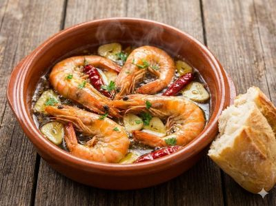

Schrimp with garlics

Description
A simple recipe to cook a typical Spanish plate
Ingredients
40gr schrimps
Oil
6 garlics
Steps
Peel the schrimps
Cut the garlics in slices
Fry both of them for 5-10 min
Home